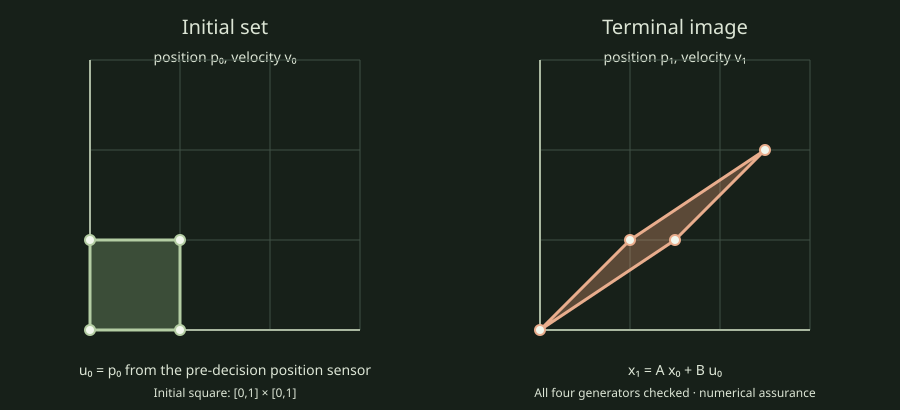

Evaluate one affine policy over a continuous set
This two-state example uses position and velocity, with one position observation available before the action. The policy sets acceleration to the observed position. The initial joint V-set is the full square [0,1] × [0,1], so its four rows define a continuous convex polytope rather than four random samples.

| Initial state | Observed position | Action | Terminal state |
|---|---|---|---|
| (0,0) | 0 | 0 | (0,0) |
| (0,1) | 0 | 0 | (1,1) |
| (1,0) | 1 | 1 | (1.5,1) |
| (1,1) | 1 | 1 | (2.5,2) |
The model is p₁ = p₀ + v₀ + 0.5u₀, v₁ = v₀ + u₀, with u₀=p₀. The example checks the action safety row u₀ ≤ 1.25. Because the model, policy, and displayed constraint are affine, checking the four generators covers the convex hull mathematically. The implementation reports numerical assurance because its propagation uses binary64 arithmetic. It does not call this a validated proof.
This illustrated fixture is also measured in the versioned EXT-04 continuous policy report. The report includes the input record, actual raw rows, source commit, seven measured batches, and evidence limits.
Reproduce the numerical example
cmake -S . -B build/ext04 -DCMAKE_BUILD_TYPE=Release -DCSL_ENABLE_HIGHS=ON -DCSL_BUILD_EXT04_CONTINUOUS_REPORT=ON
cmake --build build/ext04 --config Release --target csl_ext04_continuous_policy_report --parallel 4
build/ext04/csl_ext04_continuous_policy_report smoke